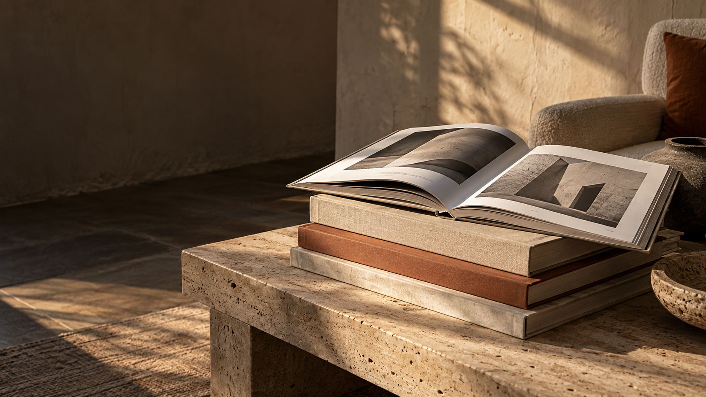

MARGIN / 01Architecture
OnLiving
Essays and spaces2026

Independent editions on the spaces, objects and places that shape everyday life.
Explore the editions ↗We imagine books as objects to live with. Each edition brings together careful photography, clear writing and considered production around one subject.
Rooms that make space for ordinary life. A concept edition about the small decisions that make a place feel lived in.
Enquire about an edition ↗Not more content.
Something to
come back to.
MARGIN is a portfolio concept for an independent publisher. The editorial content and editions shown here are illustrative.
A sample editorial rhythm: one idea, room for an image, then a question that stays with the reader. These are illustrative pages for the portfolio concept.
Places change as we use them. The marks left behind are part of their story.
What would you keep if you could only choose one detail?
Browse the editions ↗Tell us what you would like to publish or see next. This demonstration form shows the enquiry flow; messages are not sent.